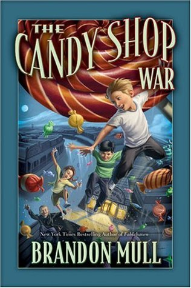

"The Candy Shop War"
- Read on 2018-01-10
- Rating: ️️️️️
- Format: 🎧 (10 hours 26 minutes)
With magic candy granting special powers, yet made by confectioners with ulterior motives, these kids are in for a real treat. (insert rimshot here)
Really, this is a fun book for both kids and adults. I don't feel like it suffered from major plot holes, or absurdities as some YA books can. Maybe they were still there, but with the book being Fantasy, they may have been easier for me to gloss over.
Some of the movement details (or action scenes) were a bit too detailed, especially considering how irrelevant those details were in the long-haul. A major saving point is how much I enjoyed the variety of spells and abilities. Lastly, if you listen to this (read by Emily Janice Card), I felt like she did a better than average job, particularly with the voice for two of the characters (Pigeon and Mrs. White).
- Prior: The Book Thief
- Next: Caesar